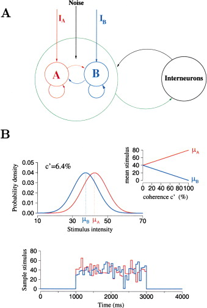
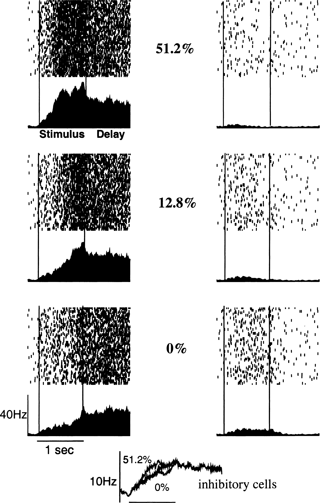
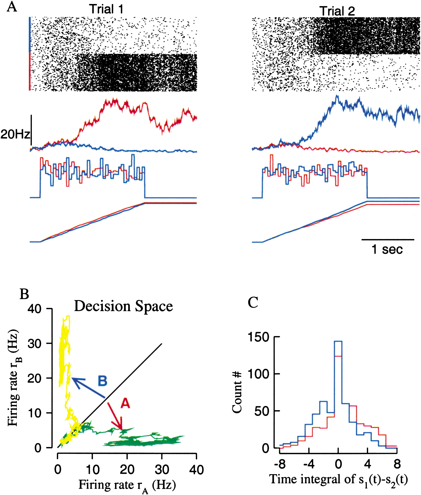
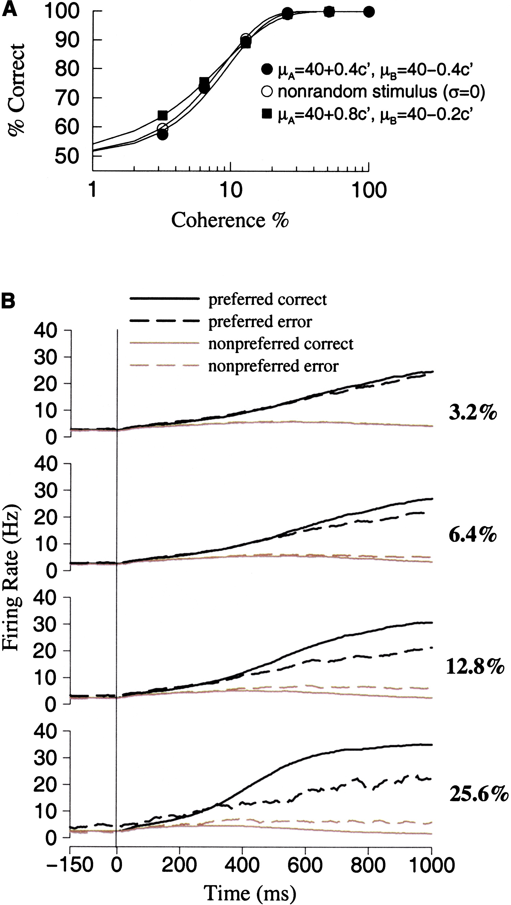
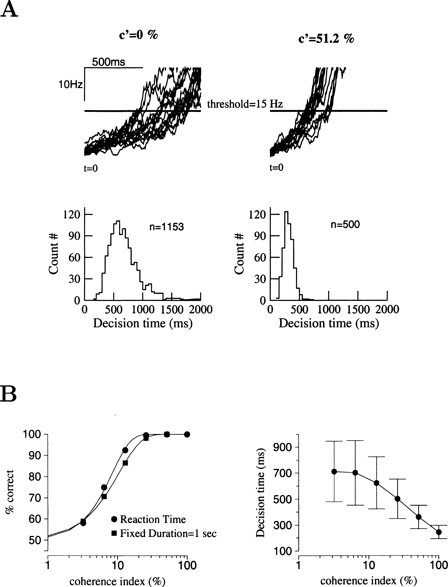
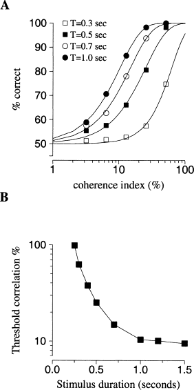
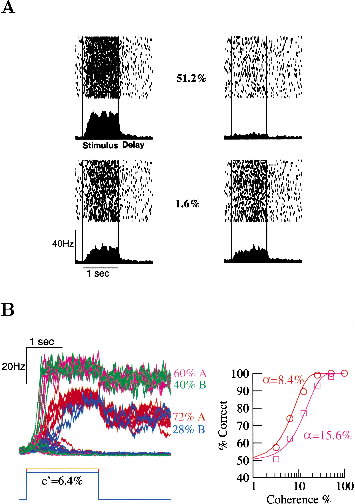

Probabilistic Decision Making by Slow Reverberation in Cortical Circuits
Wang Neuron, December 5, 2002, 36:955-968
Introduction
This notebook will work through the seminal paper by Wang (2002) to simulate synaptic decision making. The note book will follow the flow of the original paper and reproduce each figure.
Material and Methods
The two-variable network model
 Figure 1: Model Architecture and Coherence-Dependent Stochastic inputs.
(A) Schematic depiction of the model. There are two pyramidal cell groups (A and B), each of which is selective to one of the two stimuli (mimicking motion to the right or left). Within each pyramidal neural group there is strong recurrrent excitatory connections that can sustain persistent activity triggered by a transient preferred stimulus. The two neural groups compete through feedback inhibition from interneurons.
(B) Top: the inputs are Poisson rates that vary in time and obey Gaussian distributions, with means μA and μB and with standard deviation σ. The means $μ_A$ and $μ_B$ depend on the coherence level linearly (insert). Bottom: an example of stochastic inputs to neural groups A and B with $μ_0$ = 40 and $σ$ = 10 in Hz, c′ = 6.4%. At every 50 ms, the two stimuli are independently resampled using their Gaussian distributions, so that the inputs vary stochastically in time. If $σ$ = 0, the two inputs would be constant in time.
The Cortical Network Model
The corical network consists of N=2000 neurons with excitaroty pyramidal cells ($N_E$=1600) and inhibitory $N_I$ interneurons ($N_I$=400).
Neurons The Integrate and Fire Model
The nuerons are simulated unsing the integrate and fire model: \begin{equation} C_m\frac{dV(t)}{dt} =-g_L(V(t)-VL)-I{syn}(t), \end{equation} where $V(t)$ is the membrane potential, $C_m$ is the membrane capacity, $g_L$ is the membrane leak conductance, $VL$ is the resting potential and $I{syn}$ represents the total synaptic current flow. To simulate spiking a firing threshold $V{th}$ and a refactory period $\tau{ref}$ are introduced such that \begin{equation} if V(t) > V_{th}, \end{equation} \begin{equation} V(t) =V_rest+RI0\frac{\Delta}{\tau{ref}}, for \Delta << \tau{ref} \end{equation} with a reset potential $V{reset}$
Parameters
The parameters for the model are:
| Parameter | Excitatory (E) | Inhibitory (I) | Units | |——|——|——| | $C_m$ | 0.5|0.2| nF | | $g_L$ | 25|20| nS | | $VL$ | -70|-70| mV | | $V{reset}$ |-55|-55| mV | | $V{th}$ |-50|-50| mV | | $\tau{ref}$ |2|1| ms | | $\tau_{m}$ |20|10| ms |
Libraries
# LIBRARY
import numpy as np # vector manipulation
import math # math functions
import sys
# THIS IS FOR PLOTTING
%matplotlib inline
import matplotlib.pyplot as plt # side-stepping mpl backend
import warnings
warnings.filterwarnings("ignore")
Synapses
Neural Circuit
The total synpatic input current is given by $$ I{syn}=I{ext,AMPA}(t)+I{rec,AMPA}(t)+I{rec,NMDA}(t)+I_{rec,GABA}(t),$$
def I_syn_t(I_extAMPA,I_recAMPA,I_recNMDA,I_recGABA):
I_syn=I_extAMPA+I_recAMPA+I_recNMDA+I_recGABA
return I_syn
where the external AMPA input is given by $$ I{ext,AMPA}=g{ext,AMPA}(V(t)-V_{E})s^{ext,AMPA}(t), $$
def I_extAMPA_t(g_extAMPA,V,s_extAMPA):
V_E=0
I_extAMPA=g_extAMPA*(V-V_E)*s_extAMPA
return I_extAMPA
the recurrent AMPA input is given by $$ I{rec,AMPA}=g{rec,AMPA}(V(t)-V{E})\Sigma{j=1}^{c_E}s^{ext,AMPA}(t), $$
def I_recAMPA_t(g_recAMPA,V,w,s_AMPA):
V_E=0
I_recAMPA=g_recAMPA*(V-V_E)*np.sum(np.dot(w,s_AMPA)
return I_recAMPA
File "<ipython-input-4-de7012b96bf7>", line 4
return I_recAMPA
^
SyntaxError: invalid syntax
the recurrent NMDA is given by $$ I{rec,NMDA}=\frac{g{NMDA}(V(t)-VE)}{(1+[Mg^{2+}]exp(-0.062V(t))/3.57)}\Sigma{j=1}^{c_E}s^{NMDA}(t), $$
def I_recNMDA_t(g_extNMDA,V,w,s_NMDA):
V_E=0
Mg=1
I_recNMDA=g_NMDA*(V-V_E)/(1+Mg*np.exp(-0.062*V)/3.57)*np.sum(np.dot(w,s_NMDA))
return I_recNMDA
the recurrent GABA is given by $$ I{rec,GABA}=g{GABA}(V(t)-VI)\Sigma{j=1}^{cI}s^{GABA}(t), $$ where $V{E}=0mV$, $VI=-70 mV$, $w{j}$ are dimensionless weights
def I_recNMDA_t(g_extNMDA,V,w,s_NMDA):
V_I=-70
Mg=1
I_recNMDA=g_NMDA*(V-V_I)/(1+Mg*np.exp(-0.062*V)/3.57)*np.sum(np.dot(w,s_NMDA))
return I_recNMDA
Parameters
The parameters for the model are:
| Parameter | Exciatory | Inhibitory |
|---|---|---|
| $g_{ext,AMPA}$ | 2.1 | 1.62 |
| $g_{rec,AMPA}$ | 0.05 | 0.04 |
| $g_{NMDA}$ | 0.165 | 0.13 |
| $g_{GABA}$ | 1.3 | 1.0 |
AMPA Channels
$$ \frac{d s{j}^{AMPA}(t)}{dt} =\frac{s{j}^{AMPA}(t)}{\tau_{AMPA}}+\Sigma_k \delta(t-t^kj)$$ where $\tau{AMPA}=2$ms adn the sum over $k$ represents a sum of spikes emitted by presynaptic neuron $j$.
def s_AMPA(s_AMPA,SPIKES):
tau_AMPA=2
s_AMPA=-s_AMPA/tau_AMPA+np.sum(SPIKES)
return s_AMPA
NMDA Channels
$$ \frac{d s{j}^{NMDA}(t)}{dt} =-\frac{s{j}^{NMDA}(t)}{\tau{NMDA,decay}}+\alpha(1- s{j}^{NMDA}(t) )$$ $$ \frac{d x{j}(t)}{dt} =-\frac{x{j}(t)}{\tau_{NMDA,rise}}+\Sigma_k \delta(t-t^kj)$$ where the decay time of NMDA currents $\tau{NMDA,decay}=100ms$, $\alpha=0.5 ms^{-1}$ and $\tau_{NMDA,rise}=2ms$
def s_AMPA(s_AMPA,SPIKES):
tau_AMPA=2
s_AMPA=-s_AMPA/tau_AMPA+np.sum(SPIKES)
return s_AMPA
def s_AMPA(s_AMPA,SPIKES):
tau_AMPA=2
s_AMPA=-s_AMPA/tau_AMPA+np.sum(SPIKES)
return s_AMPA
GABA Channels
$$ \frac{d s{j}^{GABA}(t)}{dt} =-\frac{s{j}^{GABA}(t)}{\tau{GABA}}+\alpha(1- s{j}^{NMDA}(t) )$$ where the decay time of GABA currents $\tau_{GABA}=5ms$.
def I_input_1(c_dash):
J_A_ext=0.00052 # nA/Hz
mu_0=30 # Hz
I_motion=J_A_ext*mu_0*(1+(c_dash)/100)
return I_motion
Structure of Recurrent Excitatory Connections between Pyramidal cells
def I_input_2(c_dash):
J_A_ext=0.00052 # nA/Hz
mu_0=30 # Hz
I_motion=J_A_ext*mu_0*(1-(c_dash)/100)
return I_motion
Numerical Solution
Second Order Runge Kutta
$$y_{i+1}=y_i+\frac{\Delta}{2}(k_1+k_2),$$ $$k_1=f(x_i,y_i),$$ $$k_2=f(x_i+\frac{\Delta}{2},y_i+\frac{\Delta}{2}k_1).$$
def RK2(y,x,f):
delta=0.05
k1=f(x,y)
k2=f(x+delta/2,y+delta/2*k1)
y=y+delta/2*(k1+k2)
return y
def f(x,y):
return x+y
RK2(1,2,f)
c_dash=0.0
for i in range (0,len(time)-1):
if time[i] >=500 and time[i]<600:
c_dash=25.0
elif time[i] >=700 and time[i]<800:
c_dash=35.0
elif time[i] >=900 and time[i]<1000:
c_dash=45.0
elif time[i] >=1100 and time[i]<1200:
c_dash=25.0
else:
c_dash=0.0
Firing_target_1[i]=H(x_1[i])
Firing_target_2[i]=H(x_2[i])
I_noise_1[i+1]=Background_Activity(I_noise_1[i])
I_noise_2[i+1]=Background_Activity(I_noise_2[i])
I_1[i+1]=I_input_1(c_dash)
I_2[i+1]=I_input_2(c_dash)
x_1[i+1],x_2[i+1]=total_synaptic_current(S_1[i],S_2[i],I_1[i+1],
I_2[i+1],I_noise_1[i+1],I_noise_2[i+1])
S_1[i+1]=Network_Dynamics(S_1[i],x_1[i+1])
S_2[i+1]=Network_Dynamics(S_2[i],x_2[i+1])
Plotting
Input
 Figure 2. Model Reproduces Salient Characteristics of Decision-Correlated Neural Activity in LIP  Figure 3. Decision Dynamics with Inputs of Zero Coherence
(A) Two trial simulations (red, neural group A; blue, neural group B). From top to bottom: raster, population firing rates rA and rB, stochastic inputs, and time integrals of inputs. In these two examples, decision choice (A or B) is correlated with the larger time integral of the input.
(B) Network dynamics in the decision space for the same two trials as in (A). Note the initial random walk along the diagonal line (when the population activity is similar for the two groups); afterwards the network converges to one of the two attractors (at [rA = 20 Hz, rB = 3 Hz] and [rA = 3 Hz, rB = 20 Hz].
© Histogram of the difference in the input time integral for trials in which the decision choice is A (red curve) or B (blue curve). For trials where attractor A wins, the average I standard deviation of ΔS is 0.8 ± 3, whereas for trials where attractor B wins, it is −0.7 ± 3 (n = 1000, σ = 10 Hz, and stimulus duration is 1 s).
 Figure 4. Performance and Population Activity Time Courses
(A) Neurometric functions (% correct). Data are fitted by Weibull functions. Filled circle: noisy stimuli (σ = 4 Hz) with symmetrical dependence of the mean values on input coherence (the ratio of the slopes is ρA/ρB = 1). Open circle: without noise in the stimulus (σ = 0), the network’s performance is virtually the same. Filled square: asymmetrical dependence of the mean stimuli on coherence (the ratio of the slopes is ρA/ρB = 4). The coherence threshold is slightly lower.
(B) Time course of population activity for four coherence levels. Black curves, the choice is the preferred stimulus; gray curves, the choice is the nonpreferred stimulus. Correct trials are indicated by solid curves, error trials by dashed curves.
 Figure 5. Reaction Time Simulations
Same parameters as in Figure 4.
(A) During a 2 s stimulation, at the moment when one of the two neural groups reaches a fixed threshold (15 Hz) of population firing activity, the decision is made and the deliberation or decision time is read out. The decision time is longer and more variable at low coherence (left) than at high coherence (right). This is further quantified by the decision time histogram (bottom), which has a larger mean and is broader at low coherence (left) than at high coherence (right).
(B) Left: Neurometric functions for the reaction time stimulation (circle) and with fixed stimulus duration of 1 s (square). The coherence threshold (defined by 82% correct) is αRT = 8.4% and αFD = 10.4%. Right: Average decision time is linear in the logarithm of the coherence level, ranging from 200 ms at high c′ to 800 ms at low c′. At very low coherence there is a saturation. Note the large standard deviation of decision time, especially at low coherence.
 Figure 6. Dependence of the Decision Performance on the Duration of Stimulus Presentation
The stimulus offset is followed by a fixed delay of 2 s, and the decision choice is based on which of the two attractors wins the competition.
(A) Neurometric function is shifted to the left with longer stimuli.
(B) Coherence threshold (α defined by 82% correct choices) decreases with the stimulus duration and plateaus for stimulus presentation longer than 1.5 s.
 Figure 7. Optimal Decision-Making Performance Requires Sufficiently Strong and Slow Synaptic Reverberations
(A) When the strength of recurrent connections is weaker (w+ = 1.4 instead of w+ = 1.7), attractor dynamics can no longer be sustained by intrinsic network excitation. Neural activities of subpopulation A (left) and B (right) are shown at two coherence levels (1.6% and 51.2%). Same conventions as in Figure 2. In this case, there is a reduced time integration (ramping activity), categorical choice at low coherence is lost, and mnemonic persistent activity is absent during the delay period.
(B) Network behavior with an increased strength of recurrent connections (w+ = 1.8). Left: population activities in ten individual trials for the control (red, neural group A; blue, neural group B) and for enhanced recurrency (purple, neural group A; green, neural group B). With stronger excitatory reverberations, persistent activity level is doubled (from 20 Hz in control to 40 Hz), and the integration time of stimulus is shortened by a half. The performance is reduced from 72% to 60% correct at c′ = 6.4%. Right: the network’s performance is worse, with the neurometric function’s threshold increased from 8.4% (red) to 15.6% (purple). (A) The input signal is reversed during stimulation, where the signal strength is weak (6.4%) and the same before and after the reversal. Percentage choices for A and B as function of the onset time of reversal. The dependence is initially linear as a function of the time of reversal, consistent with an integration of the first and second inputs of the opposite signs. However, the behavioral performance is no longer affected if signal reversal occurs too late (e.g., the reversal time is larger than 700 ms after the stimulus onset), when the network becomes dominated by the intrinsic attractor dynamics.
(B) Even when the signal is reversed 1 s after the stimulus onset, the decision is still reversable by a more powerful input. Percentage choices for A and B as function of the coherence level of the reversed signal. When the new input is sufficiently large (coherence above 70%–80%), the decision is always reversed in favor of the “new evidence.”
© Examples for control (top) and signal reversal from c′ = 6.4% to −80% at 1 s after the stimulus onset (bottom). Note the slow ramp-down of population activity in group A (red), and ramp-up of population activity in group B (blue) during the second half of the stimulation when the decision is reversed.